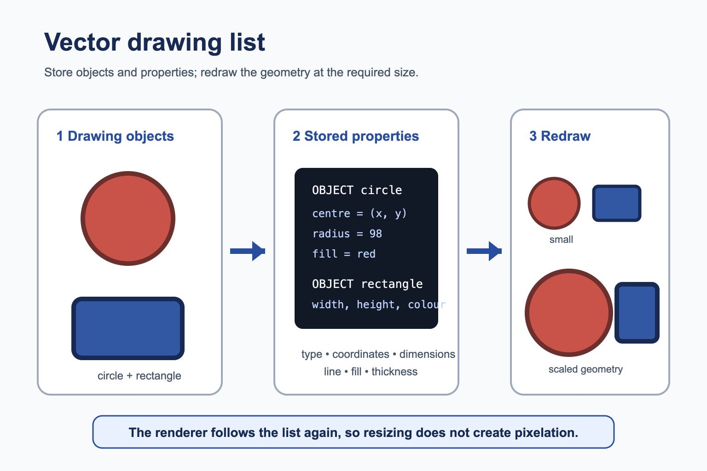

Cambridge AS9618 | Paper 1 | Section 1: Information representation
Bitmap and vector graphics
Flexible-depth lesson
Bitmap and vector graphics
S1.08, S1.09 | Select what to omit, teach briefly or explore in depth.
Quickdiagnose + essentials
Fullcomplete explanation
Deepprerequisites + extension
Choosepractice by need
Teacher choice
Choose the depth for this group
Quick route
Use the diagnostic, learning objectives, first worked example and foundation question. Stop once the learner can explain the central distinction accurately.
Full route
Teach every core explanation point, the worked example and all lesson questions. Use the visual only when it adds a different representation.
Deep route
Add the prerequisite refresher, ask learners to connect the concept checklist, discuss the labelled extension and complete a transfer question without a model answer.
Part 1 | optional depth
Prerequisite knowledge and quick diagnostic
Recall S1.01 before starting this lesson.
Give one accurate definition or method step before continuing. If it is missing, revisit only that prerequisite.
Open optional prerequisite refresher
Use and distinguish kibi/kilo, mebi/mega, gibi/giga and tebi/tera; binary prefixes use powers of 1024 and decimal prefixes use powers of 1000.
Show understanding of binary magnitudes and the difference between binary prefixes and decimal prefixes.
Part 2 | deliberately over-complete
Knowledge explanation
Learning objectives
Show understanding of how data for a bitmapped image are encoded; perform calculations to estimate the file size for a bitmap image; show understanding of the effects of changing elements of a bitmap image on the image quality and file size.
Show understanding of vector-graphic encoding and justify bitmap or vector storage for a given task.
Open the concept checklist and choose what to teach
pixel
file header
pixel data
image resolution
screen resolution
colour depth / color depth
ignore / header
vector encoding
drawing objects / drawing object
properties
drawing list
bitmap
given application
Detailed explanation
Teach all points, or select only the ones this group needs. The list is intentionally fuller than a fixed lesson slot.
Use and understand the terms pixel, file header, image resolution, screen resolution and colour depth/bit depth. Required effects concern image resolution and colour depth/bit depth.
Use drawing object, property and drawing list; a justification must connect bitmap/vector characteristics to the stated application.
A bitmap file contains pixel data and a file header. The header stores metadata needed to interpret the file, such as its format and image properties; it is not one of the image pixels. When a calculation says to ignore the file header, calculate only width x height x colour depth.
Image resolution is the number of pixels stored in the image, commonly width x height. Screen resolution is the number of physical display pixels available on the screen. They are independent: scaling an image on a screen does not create new captured detail.
For an uncompressed bitmap, pixel-data size in bits is width in pixels x height in pixels x colour depth in bits per pixel. Divide by 8 to convert bits to bytes. Use the units requested by the question.
Bitmap metadata is stored separately from pixel values, commonly in a file header. Add header or metadata bytes only when their size is supplied; when a question says to ignore the header, calculate pixel data only.
Vector encoding stores a graphic as a drawing list of drawing objects. Each object has properties such as type, coordinates, dimensions, line colour, fill colour and line thickness; software redraws the objects from these instructions.
Vectors scale without pixelation and suit logos, diagrams and shapes. Bitmaps store individual pixels and suit photographs or detailed textures. For a given application, the choice must be justified using the source image and intended editing or scaling.
For a given application, justify bitmap or vector storage by connecting the image content and required editing or scaling to the chosen representation.
Worked example
Calculate pixel data and then account for metadata: A 640 x 480 bitmap using 24-bit colour stores 640 x 480 x 24 = 7,372,800 bits = 921,600 bytes of pixel data. With a supplied 54-byte header, the total is 921,654 bytes.

Vector drawing list: objects, properties and redrawing. One maintained explanation is shown as an image on larger screens and as text on small screens.
A vector graphic stores a drawing list of drawing objects rather than a fixed grid of pixels.
Each object stores properties such as type, coordinates, dimensions, line colour, fill colour and line thickness.
Software follows the instructions to redraw the objects at the required size without pixelation.
Part 3 | select by learner need
Practice by question type
explainexplainfoundation4 marks
Question 1. A designer creates a simple icon from circles and rectangles. Explain how it is stored as a vector graphic and give one advantage over a bitmap when resized.
Show answer and marking guidance
Answer: stored as a drawing list / list of objects; stores object properties such as coordinates/dimensions/colour; software redraws objects from the descriptions; can be resized without pixelation / loss of shape quality
Marking guidance: Do not accept 'vector has better quality' unless scalability or object-based storage is explained.
Common error: For the command word explain, perform that exact action; do not replace it with an unrelated fact.
calculatecalculateapplication4 marks
Question 2. A 200 by 100 bitmap uses 24-bit colour. Calculate its pixel-data size in bytes, ignoring the file header, and explain what has been excluded.
Show answer and marking guidance
Answer: 200 x 100 x 24 bits; 480,000 bits / 60,000 bytes; file header contains metadata used to interpret the bitmap; header data is excluded because the question requests pixel data only
Marking guidance: Do not treat the file header as a pixel or silently add an invented header size.
Common error: Do not repeat the same point in different words; each mark needs a separate idea or method step.
identifyrecalltransfer2 marks
Question 3. Identify two properties stored for a vector object.
Show answer and marking guidance
Answer: Any two of coordinates, dimensions, fill, line colour or line thickness.
Marking guidance: Award one mark for each distinct, technically accurate point or method step.
Common error: Do not copy the worked example unchanged; transfer the method and check it against the new context.
Related past-paper indexes
Reference
Marks
Command word
Question type
9618/13/S/25 Q1(ii)
4
calculate
calculate
9618/13/W/25 Q7(d)
4
calculate
calculate
9618/11/S/25 Q3(a)
3
complete
recall
9618/13/W/25 Q7(c)
3
calculate
calculate
Index only: Cambridge question and mark-scheme wording is not reproduced on this public course page.
Part 4 | close when ready
Summary and exam reminders
Summary
Define bitmap and vector graphics with the exact technical vocabulary expected by the syllabus.
Use the lesson method on a fresh context and show the intermediate decision, representation or calculation.
Match the shape of the answer to the command word and the available marks.
Check the final answer against the scenario instead of repeating a memorised sentence.
Common error to correct
Students often say 'higher quality is always better'. Correction: higher quality can be wasteful if storage, bandwidth or purpose does not justify it.
Exam technique
Follow the command word: state gives a fact; explain links a cause to a consequence; compare covers both sides.
Match the number of independent points or method steps to the available marks.
For bitmap and vector graphics, use the exact technical term before applying it to the scenario.